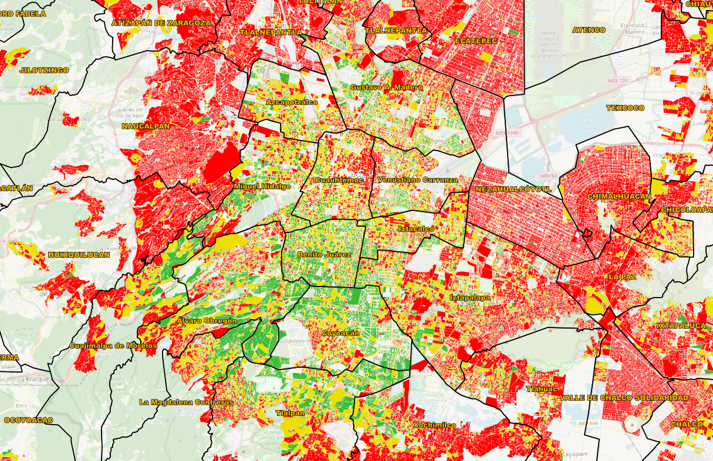

Por más de 18 años hemos mapeado la volatilidad de México. Nuestro **Score IRSO 0-300** le brinda la **certidumbre geográfica** para optimizar la seguridad, la logística y la inversión.
SOLICITAR DEMO EN VIVO (15 MINUTOS)Mapeamos la inestabilidad y la propensión a la abstención (apatía cívica) a nivel de Sección Electoral, factores que impactan la estabilidad del entorno operativo.
Evaluamos el tamaño del reto logístico (Lista Nominal) y las dificultades de infraestructura que amenazan la operación técnica y la certeza del resultado en campo.
Identificamos la convergencia de vulnerabilidad social y política que amenaza su inversión y propiedad, proporcionando un sustento objetivo para enfocar recursos.
Politeia CMAPS es el corazón de la inteligencia, basado en un rigor metodológico constante:
El IRSO es un score integral, trazable y ponderado al 33.33% en cada dimensión, con un rango final de **0 a 300 puntos**. [cite: 200, 285]
Mide la vulnerabilidad por **Carencia de Servicios** (ej. sin Internet/Drenaje). [cite: 201, 216]
Mide el **Reto Logístico** basado en el Percentil de la Lista Nominal Total. [cite: 183, 201]
Mide el riesgo de movilización basado en la **Abstención Histórica**. [cite: 183, 201]
[cite_start]Un score cercano a **300** indica la convergencia máxima de inestabilidad y riesgo a la propiedad. [cite: 262]

[cite_start]El color **ROJO (Score 200-300)** es la guía para la acción, pues indica la convergencia máxima del Riesgo Social, la inestabilidad Política y el riesgo a la Propiedad. [cite: 83, 85] [cite_start]Es aquí donde la inteligencia de **Politeia CMAPS** permite **Repriorizar la seguridad** y los activos logísticos, eliminando el gasto en zonas de bajo riesgo. [cite: 87, 88]
[cite_start]Nuestra metodología es **escalable y ya está probada** en múltiples estados (Querétaro, Guanajuato, Tlaxcala, Yucatán, Quintana Roo, entre otros), ofreciendo una solución con **visión de país**. [cite: 141]
Deje de operar con incertidumbre. [cite_start]Solicite una sesión de 15 minutos para una **Demostración en Vivo** del sistema y su capacidad de filtrado de riesgo. [cite: 145]
AGENDE SU DEMO AHORA
Contacto Directo:
[cite_start]**José Antonio Cardeña Medina** [cite: 146]
[cite_start]Email: politeiacmaps@gmail.com [cite: 147]
[cite_start]Tel: 5564646085 [cite: 146]